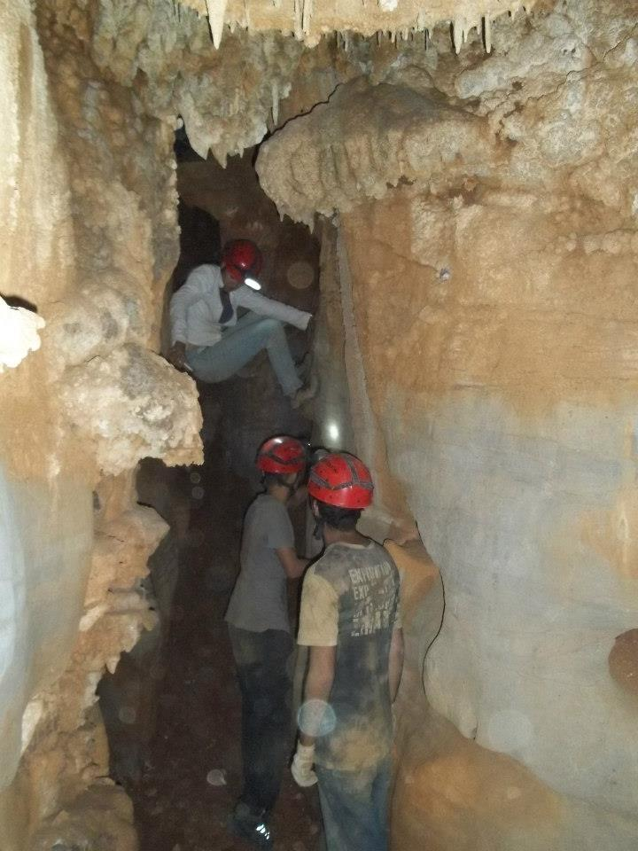

Dicas para a atividade
A prática de exploração de cavernas, conhecido como caving, é uma atividade esporte-científica que possui praticantes fiéis por todo o planeta. Para realização de uma prática de Caving segura recomendamos algumas dicas. Confira abaixo.
Dicas básicas
- Vá acompanhado de alguém com experiência em caverna. Em uma equipe de no mínimo 3 integrantes.
- Se estiver indo pela primeira vez em uma caverna, dê preferência a cavernas secas e predominantemente horizontais. Esse tipo de gruta é de mais fácil progressão e têm seus riscos minimizados.
- Antes de sair de casa informe a pelo menos uma outra pessoa o seu destino, a localização da caverna, quem são as pessoas que te acompanharão e o horário previsto para retorno. Em caso de acidentes os trabalhos de busca serão altamente facilitados com essas informações.
- Use equipamentos adequados. Possua treinamento prévio para o uso desses equipamentos e leve o necessário. Não se esqueça que uma roupa e calçados adequados, além de capacete e iluminação (lanterna) são itens individuais indispensáveis. Jamais entre em uma caverna sem esses itens. É a sua própria segurança que estará em risco.
- Não se esqueça de levar alimentação e água.
- Atente-se às condições climáticas da região. Em período de chuvas as cavernas se tornam muito mais perigosas, a água infiltra pela rocha tornando-as altamente escorregadias. Cavernas com água podem inundar havendo chuva sobre à caverna ou em algum ponto à jusante da rede de drenagem.
- Faça uma alongamento muscular antes de entrar na caverna, isso pode evitar dores no dia seguinte. A depender das dimensões da caverna poderá ser necessário se agachar e arrastar constantemente.
- Recomenda-se possuir um anti-alérgico sempre que se realiza atividades de campo.
- Não entre em uma caverna alcoolizado ou sob efeito de outras drogas.
- Deixe o líder da equipe ciente de quaisquer particularidades médicas que possua.
Cuidados com a caverna
- Jamais retire qualquer material da caverna. Mesmo espeleotemas quebrados devem ser mantidos no local. A retirada desses materiais além de destruir um patrimônio natural de origem rara que se forma em uma escala de tempo muito superior à presença humana também constitui como crime ambiental.
- Coletar, matar ou interferir na vida dos animais que vivem na caverna é igualmente tratado como crime ambiental. Lembre-se que nesse ambiente você é o invasor, e que cada animal e inseto que vive lá faz parte do sistema ecológico.
- Não faça marcações no interior da caverna. Se necessitar marcar algum ponto para não se perder, faça-o deixando um objeto num local visível e retire-o na volta.
- Possua muito cuidado ao se movimentar na caverna. Muitos animais e frágeis formações rochosas podem ser danificados pela falta de atenção do espeleólogo. Esteja sempre atento por onde pisa e evite ao máximo bater o capacete no teto e nas paredes.
- Tudo que for levado ao interior da caverna pela equipe deve ser retirado na hora de ir embora. Não deixe nenhum lixo no local, nem restos orgânicos de alimentos, pois esse interfere diretamente no fluxo de energia da gruta. O resquício do carbureto também deve ser levado para fora, pois esse é tóxico à fauna da caverna. Utilize uma garrafa para armazenar sua urina.
- Assim como o interior da caverna, o seu entorno deve ser igualmente preservado. A fauna e flora da região estão diretamente ligadas ao equilíbrio ecológico da gruta, sendo o principal fornecedor de energia (alimento) para o interior da caverna. A destruição da vegetação e fauna fora da caverna gera impactos a todo o sistema.
- Jamais fume no interior de uma caverna, a fumaça é extremamente prejudicial à fauna.
- Se encontrar vestígios arqueológicos ou paleontológicos dentro da caverna, resiste a tentação de levá-lo. É importante a preservação do local para futuros estudos. Tire fotos dos achados e leve as imagens com a localização às entidades competentes.
Dicas para uma progressão segura
- Capacete e iluminação são itens básicos indispensáveis no interior da caverna. Tenha pelo menos 3 fontes de iluminação. Mantenha seu capacete bem ajustado e afivelado à cabeça. Retire o capacete apenas quando já estiver fora da caverna, em local sem risco de rolamento de pedras.
- Olhe sempre por onde está andando. Possua extremo cuidado com blocos soltos, se possível busque outro caminho. Mantenha a luz da sua lanterna sempre iluminando o local por onde anda. Não dê saltos, pulos ou corra dentro da caverna sem necessidade.
- Sempre olhe onde está colocando as mãos, é comum possuir aranhas nas fendas da parede.
- Mantenha no mínimo três pontos de apoio ao se movimentar na caverna.
- Ao se deparar com um aclive, deve progredir uma pessoa de cada vez. É comum que caiam pequenas pedras durante a subida, podendo atingir quem estiver embaixo. As outras pessoas da equipe devem aguardar em um local seguro onde não haja riscos de serem atingidas.
- Não se separe do grupo no interior da caverna, mas também possua cuidado em não ficar próximo demais em locais instáveis, uma pedra que alguém derrube acidentalmente pode ferir outro membro da equipe.
- O grito "PEDRA!" é utilizado quando há algum deslizamento ou queda na caverna alertando aos outros membros.
- Sempre "sinta" o local onde você está se apoiando, verifique se não é um bloco solto ou uma formação rochosa frágil que tem risco de quebrar com seu peso.
- Fique atento ao caminho que está escolhendo. Muitas cavernas costumam possuir vários condutos, tornando-a labiríntica. É importante que todos da equipe saibam como retornar à entrada da caverna.
- Se você não se sentir bem para prosseguir na exploração a melhor recomendação é de fato não prosseguir. Descanse e caso sinta necessidade peça para ser acompanhado até a saída.
- Cuidado com a água. Se houver um lago dentro da caverna e for necessário atravessá-lo, faça utilizando flutuadores. Coletes salva-vidas são recomendados nesse caso. Se precisar atravessar um rio subterrâneo é recomendado o uso de corda para apoio. Possua um cobertor de emergência, água em cavernas são muito frias.
- Pequenos desníveis com paredes parelas próximas podem ser superados utilizando duas técnicas bastante simples.
- Técnica Oposição: mantendo as costas em uma das paredes e os pés e mãos na outra, pressiona-se o corpo contra as paredes e assim realiza o escalada.
- A técnica Chaminé é semelhante, consiste em colocar as mãos e pés esquerdos em uma parede, e as mãos e pés direitos na parede em frente e realizar a escalada. Mantenha sempre pelo menos três pontos de apoio. (as imagens ao final do texto demonstram essas técnicas
- Siga as recomendações dos membros mais experientes.
Confira algumas imagens dos membros do Gregeo em progressão em caverna. Clique nas imagens para ampliar.

Equipamentos
É de primordial importância a utilização de equipamentos adequados ao se explorar uma caverna. Abaixo selecionamos uma lista dos equipamentos mais utilizados na espeleologia, no entanto deve ser avaliado em cada saída quais serão necessários levar. Dois erros são a realização de atividade sem equipamentos adequados, assim como a realização com excesso de equipamentos causando peso extra na mochila. Lembre-se que alguns equipamentos são fundamentais e devem ser utilizados sempre por todos os indivíduos da equipe, são eles: Roupa e calçado adequados, capacete e sistema de iluminação.
Capacete:
O equipamento mais importante do espeleológo. Não se deve entrar em uma caverna sem utilizá-lo. Oferece proteção contra os constantes toques em paredes e tetos baixo, além de proteger de pedras e objetos que venham a cair. Permite que se prenda algum sistema de iluminação deixando as mãos livres.
Iluminação:
Para maior segurança deve possuir no mínimo três. No interior da caverna a escuridão é total, a única luz que haverá será aquela levada pela equipe. Os dois principais meios de iluminação são por lanterna e carbureteira.
- Lanterna: é o meio mais prático de se iluminar. Recomenda-se utilizar um modelo que se prenda ao capacete deixando as mãos livres. É recomendável possuir uma lanterna reserva no bolso e outra na mochila. Leve pilhas reservas.
- Carbureteira: É um equipamente que produz uma chama, que presa ao capacete, gera uma iluminação quente e em todas as direções. Seu funcionamento se dá através de uma reação química entre carbureto de cálcio e água gerando o gás acetileno. Esse equipamento que já foi intensamente utilizado na espeleologia alguns anos atrás, hoje é cada vez mais substituído pelas lanternas de leds.
- Outras fontes: Recomendamos levar também levar um isqueiro, uma caixa de fósforos e velas como fontes reservas. Podem ser úteis durante os momentos de descanso.
Roupa:
Deve garantir proteção ao corpo e liberdade de movimento. A mais recomendada é utilização de macacão em brim, cordura, poliéster, nylon ou algodão. Também pode-se utilizar calça (jeans ou de outro material resistente) e camiseta de manga comprida. Evite roupas muito velhas que possam rasgar facilmente, mas também não vá com roupa muito nova para evitar de estragá-la.
Calçado:
Utilize um calçado confortável, preferencialmente anti-derrapante, com solado de borracha e sulcos que garantem maior aderência ao solo. Evite calçados com o solado liso, como tênis de skatista e all star, pois esses se tornam bastante escorregadios.
Luvas:
Não devem limitar o movimento dos dedos. As mais indicadas são as emborrachadas, porém há diversos outros modelos que satisfazem ao espeleólogo. Sua maior vantagem é de manter as mãos protegidas de pequenos arranhões e limpas.
Mochila de ataque:
A mochila do espeleólogo é feita de material resistente (PVC, cordura ou lona) e não possui bolsos e zípers externos, evitando que se prenda em algum lugar durante a progressão. Pessoas que estão indo visitar a caverna podem utilizar mochilas comuns, sua principal utilidade será carregar equipamentos que não estiver usando, além da sua alimentação e água.
Bidon:
É um recipiente que quando fechado isola a entrada de água. É utilizado em cavernas com água para proteger objetos que não podem ser molhados.
Flutuadores:
Pode ser um colete salva-vidas, uma bóia, ou até mesmo garrafas pets fechada com ar dentro. Auxilia o espeleólogo a atravessar rios ou lagos em cavernas com água.
Cobertor de emergência:
Cobertor de alumínio semelhante ao utilizado pela SAMU e Bombeiros. Cabe no bolso e é recomendado em cavernas com água e locais frios. Pode ser usado em caso de hipotermia.
Perneira:
Não há necessidade do seu uso dentro da caverna. No entanto se for necessário andar por trilha para chegar à gruta se recomenda a utilização para proteger contra picada de cobra.
Escada de aço dobrável:
Escada utilizada para vencer desníveis, por ser dobrável é facilmente colocada na mochila e não representa muito peso. Recomenda seu uso em desníveis de no máximo 6 metros.
Acidente em caverna. O que fazer?
A equipe de espeleólogos deve possuir conhecimento de como agir em caso de acidente. Abaixo listamos algumas dicas que podem servir de auxílio.
- Mantenha a calma. Não se desespere e analise a situação.
- Se a vítima estiver consciente, procure acalmá-la e observe sua situação. Confira os locais de ferimento e verifique se a vítima apresenta outros sinais, tais como sonolência e confusão mental. Consiga também o telefone de contato da família. Essas informações são importantes pois a vítima pode perder a consciência posteriormente.
- Se a vítima puder andar sozinha, acompanhe-a até a saída da caverna onde poderá receber atendimento médico adequado
- Se a vítima não puder andar sozinha, a equipe deverá de forma segura levá-la até a saída, seja improvisando uma maca ou carregando-a.
- Se a vítima não puder ser resgatada pelos membros presentes, a equipe deve se dividir. Uma parte deve permanecer no local tranquilizando e oferecendo os primeiros socorros à vítima, enquanto outra parte da equipe se dirige para fora da caverna para chamar o resgate.
- A equipe que for chamar o resgate deve possuir a maior quantidade de informações possíveis, ainda que para isso seja necessário passar mais alguns minutos dentro da caverna.
- Se a vítima estiver inconsciente, imediatamente verifique a pulsação e respiração. Caso seja necessário realize manobras de primeiros socorros.
- Se você for a vítima, informe detalhadamente sua condição aos membros da equipe para que eles possam decidir a melhor forma de socorro.
- Não deixe a vítima dormir. Converse com ela, isso irá acalmá-la e evitará que sinta sono.
- Não dê água nem comida a uma pessoa com hemorragia ou que tenha batido a cabeça.
- Enrole a vítima em um cobertor de emergência.
- Evite movimentar o pescoço da vítima que precisa de resgate. Somente retire o capacete da vítima se houver real necessidade.
- Em caso de acidentes em caverna, contate o Corpo de Bombeiros pelo telefone 193. Avise também aos grupos espeleológicos locais, eles podem prestar auxílio nesse tipo de situação.
Referência bibliográfica
- Sítio eletrônico Jeito e Talento. Disponível em: <http://www.dicas.jeitoetalento.com/dicas_cavernas_a.php>. Acesso em 23 de março de 2013.
- Sítio eletrônico União Paulista de Espeleologia. Disponível em: <http://www.upecave.com.br/index.php?option=com_content&view=section&layout=blog&id=17&Itemid=50>. Acesso em 23 de março de 2013.
- Espeleologia - Noções básicas. Augusto Auler e Leda Zogbi. São Paulo. Redespelo. 2005.


{kind=link}
{kind=link}
{kind=link}
{kind=link}
{kind=link}
{kind=link}
{kind=link}
{kind=link}
{kind=link}
{kind=link}
{kind=link}
{kind=link}
{kind=link}
{kind=link}
{kind=link}
{kind=link}
{kind=link}
{kind=link}
{kind=link}
{kind=link}
{kind=link}
{kind=link}
{kind=link}
{kind=link}
{kind=link}
{kind=link}
{kind=link}
{kind=link}
Copyright© - É permitida a cópia parcial do conteúdo para fins acadêmicos e educacionais desde citada a fonte. Preserve o meio ambiente.